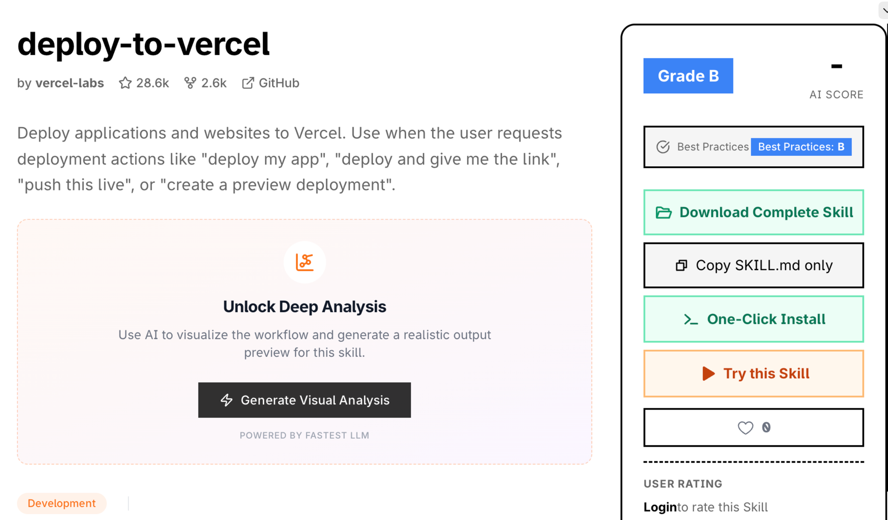

<!--
  Slide fragment cho Buổi 12 — MODULE VC-3: OpenCode thực chiến & Làm chủ AI Agent.
  Format fragment: chỉ gồm cấu hình Sổ Tay + CSS riêng + các <section class="slide">.
  Chrome (sidebar, top-bar, SlideEngine, notebook, quiz, toàn bộ CSS template)
  do frontend/templates/lesson.html cung cấp.
  Màu chủ đề: Emerald / Slate (#0F172A → #064E3B → #10B981)
-->

<script type="application/json" id="nb-questions">
{
  "1": {"title": "SỔ TAY #1 — Đầu buổi", "q": "Nhìn lại 11 buổi đã học — em thấy có sợi chỉ đỏ nào kết nối tất cả lại không? Theo em, tất cả những điều đã học đang dẫn đến đâu?"},
  "2": {"title": "SỔ TAY #2 — Sau phần OpenCode nâng cao", "q": "Khi OpenCode 'đọc file' và 'chỉnh sửa file' thay em — điều đó có nghĩa gì với vai trò của em? Em là 'người ra lệnh', 'người kiểm tra' hay 'người thiết kế'?"},
  "3": {"title": "SỔ TAY #3 — Sau phần Làm việc với Code", "q": "Em vừa thấy OpenCode làm được rất nhiều. Câu hỏi tư duy: Theo em, điều gì là thứ AI KHÔNG THỂ làm thay em trong lập trình?"},
  "4": {"title": "SỔ TAY #4 — Cuối buổi", "q": "Vẽ 1 sơ đồ đơn giản trong đầu em: Từ buổi 1 đến buổi 12, em đã đi từ đâu đến đâu? Em là ai hôm nay so với ngày đầu tiên?"}
}
</script>

<style>
  /* =========================================================
     BUỔI 12 — LOCAL STYLES
     Module VC-3: OpenCode thực chiến & Làm chủ AI Agent
     Color: Emerald / Slate
     ========================================================= */

  /* Cover: emerald gradient */
  .b12-cover {
    --grad-cover: linear-gradient(135deg, #0F172A 0%, #064E3B 55%, #10B981 100%);
  }

  /* Part dividers: emerald */
  .b12-part {
    background: linear-gradient(135deg, #064E3B 0%, #059669 100%);
  }

  /* ---- Keyword cards ---- */
  .kw-grid {
    display: grid;
    grid-template-columns: repeat(auto-fit, minmax(220px, 1fr));
    gap: 0.9rem;
    width: 100%;
    margin-top: 0.6rem;
  }

  .kw-card {
    background: var(--surface);
    border: 1px solid var(--border);
    border-left: 4px solid var(--primary);
    border-radius: var(--radius-md);
    padding: 0.95rem 1.1rem;
    box-shadow: var(--shadow-sm);
    text-align: left;
  }

  .kw-card .kw-term {
    font-weight: 800;
    color: var(--primary-dark);
    font-size: 1.02rem;
    margin-bottom: 0.25rem;
  }

  .kw-card .kw-def {
    font-size: 1rem;
    color: var(--text-dim);
    line-height: 1.5;
  }

  .kw-card.k-emerald { border-left-color: #10B981; }
  .kw-card.k-emerald .kw-term { color: #065F46; }

  .kw-card.k-teal { border-left-color: #0D9488; }
  .kw-card.k-teal .kw-term { color: #115E59; }

  .kw-card.k-cyan { border-left-color: #0891B2; }
  .kw-card.k-cyan .kw-term { color: #164E63; }

  .kw-card.k-purple { border-left-color: var(--box-purple-border); }
  .kw-card.k-purple .kw-term { color: var(--box-purple-dark); }

  .kw-card.k-orange { border-left-color: var(--box-orange-border); }
  .kw-card.k-orange .kw-term { color: var(--box-orange-dark); }

  .kw-card.k-green { border-left-color: var(--success); }
  .kw-card.k-green .kw-term { color: #065F46; }

  .kw-card.k-red { border-left-color: #EF4444; }
  .kw-card.k-red .kw-term { color: #B91C1C; }

  .kw-card.k-indigo { border-left-color: #6366F1; }
  .kw-card.k-indigo .kw-term { color: #3730A3; }

  /* ---- Process steps ---- */
  .pstep {
    display: flex;
    flex-direction: column;
    gap: 0.6rem;
    width: 100%;
    margin-top: 0.6rem;
  }

  .pstep-item {
    display: flex;
    gap: 0.85rem;
    align-items: flex-start;
    background: var(--surface);
    border: 1px solid var(--border);
    border-radius: var(--radius-md);
    padding: 0.8rem 1rem;
    box-shadow: var(--shadow-sm);
    text-align: left;
  }

  .pstep-n {
    flex-shrink: 0;
    width: 34px;
    height: 34px;
    border-radius: 50%;
    background: var(--grad-primary);
    color: white;
    font-weight: 800;
    display: flex;
    align-items: center;
    justify-content: center;
    font-size: 0.95rem;
  }

  .pstep-n.n-emerald {
    background: linear-gradient(135deg, #059669, #34D399);
  }

  .pstep-item h4 {
    font-size: 0.98rem;
    font-weight: 700;
    margin: 0.1rem 0 0.15rem;
    color: var(--text);
  }

  .pstep-item p {
    font-size: 0.96rem;
    color: var(--text-dim);
    line-height: 1.45;
    margin: 0;
  }

  /* ---- Part divider text ---- */
  .part-eyebrow {
    font-size: 0.88rem;
    font-weight: 700;
    letter-spacing: 0.12em;
    text-transform: uppercase;
    color: rgba(255, 255, 255, 0.55);
    margin-bottom: 0.4rem;
  }

  .part-num {
    font-size: 5rem;
    font-weight: 900;
    line-height: 1;
    color: rgba(255, 255, 255, 0.12);
    margin-bottom: 0.2rem;
    letter-spacing: -0.04em;
  }

  .part-title {
    font-size: 2rem;
    font-weight: 800;
    color: #fff;
    line-height: 1.2;
    margin-bottom: 0.6rem;
  }

  .part-sub {
    font-size: 1rem;
    color: rgba(255, 255, 255, 0.7);
    max-width: 600px;
    line-height: 1.5;
  }

  /* ---- Callout ---- */
  .b12-callout {
    display: flex;
    gap: 0.7rem;
    align-items: flex-start;
    padding: 0.9rem 1rem;
    border-radius: var(--radius-md);
    width: 100%;
    margin-top: 0.6rem;
    text-align: left;
  }

  .b12-callout .ci { font-size: 1.3rem; flex-shrink: 0; }
  .b12-callout p { font-size: 1rem; line-height: 1.5; margin: 0; color: var(--text-dim); }
  .b12-callout strong { color: var(--text); }

  .b12-callout.tip { background: #ECFDF5; border-left: 4px solid var(--success); }
  .b12-callout.warn { background: #FFFBEB; border-left: 4px solid var(--warning); }
  .b12-callout.danger { background: #FEF2F2; border-left: 4px solid #EF4444; }
  .b12-callout.info { background: var(--box-blue); border-left: 4px solid var(--primary); }
  .b12-callout.emerald { background: #ECFDF5; border-left: 4px solid #10B981; }
  .b12-callout.emerald p { color: #065F46; }
  .b12-callout.emerald strong { color: #064E3B; }
  .b12-callout.indigo { background: #EEF2FF; border-left: 4px solid #6366F1; }
  .b12-callout.indigo p { color: #3730A3; }
  .b12-callout.indigo strong { color: #1E1B4B; }

  /* ---- Two-column layout ---- */
  .b12-two {
    display: grid;
    grid-template-columns: 1fr 1fr;
    gap: 1.2rem;
    width: 100%;
    margin-top: 0.6rem;
    align-items: start;
  }

  @media (max-width: 820px) {
    .b12-two { grid-template-columns: 1fr; }
  }

  /* ---- Terminal / Command box ---- */
  .cmd-box {
    background: #0F172A;
    color: #E2E8F0;
    border-radius: var(--radius-md);
    padding: 1rem 1.2rem;
    width: 100%;
    text-align: left;
    font-family: var(--font-code, ui-monospace, monospace);
    font-size: 0.93rem;
    line-height: 1.55;
    box-shadow: var(--shadow-md);
    margin-top: 0.6rem;
    white-space: normal;
  }

  .cmd-box .cb-label {
    display: inline-block;
    font-size: 0.7rem;
    letter-spacing: 0.12em;
    text-transform: uppercase;
    color: #34D399;
    font-weight: 800;
    margin-bottom: 0.5rem;
  }

  .cb-line { display: block; margin: 0.1rem 0; }
  .cb-prompt { color: #34D399; font-weight: 700; }
  .cb-cmd { color: #FCD34D; font-weight: 600; }
  .cb-arg { color: #6EE7B7; }
  .cb-out { color: #94A3B8; font-style: italic; }
  .cb-comment { color: #475569; }
  .cb-good { color: #34D399; }
  .cb-bad { color: #F87171; }
  .cb-think { color: #A78BFA; font-style: italic; }

  /* ---- ReAct loop ---- */
  .react-loop {
    display: flex;
    flex-wrap: wrap;
    align-items: center;
    gap: 0.4rem;
    width: 100%;
    margin-top: 0.6rem;
    justify-content: center;
  }

  .rl-node {
    background: #ECFDF5;
    border: 2px solid #10B981;
    border-radius: var(--radius-md);
    padding: 0.5rem 0.85rem;
    font-size: 0.92rem;
    font-weight: 700;
    color: #065F46;
    white-space: nowrap;
  }

  .rl-arrow {
    color: #10B981;
    font-size: 1.1rem;
    font-weight: 700;
    flex-shrink: 0;
  }

  /* ---- Install steps (numbered) ---- */
  .install-steps {
    display: flex;
    flex-direction: column;
    gap: 0.5rem;
    width: 100%;
    margin-top: 0.6rem;
  }

  .is-row {
    display: flex;
    gap: 0.8rem;
    align-items: flex-start;
    padding: 0.75rem 1rem;
    background: var(--surface);
    border: 1px solid var(--border);
    border-radius: var(--radius-md);
    text-align: left;
  }

  .is-num {
    flex-shrink: 0;
    width: 30px;
    height: 30px;
    border-radius: 50%;
    background: linear-gradient(135deg, #059669, #34D399);
    color: white;
    font-weight: 800;
    display: flex;
    align-items: center;
    justify-content: center;
    font-size: 0.9rem;
  }

  .is-row h4 { font-size: 0.96rem; font-weight: 700; margin: 0 0 0.1rem; color: var(--text); }
  .is-row p  { font-size: 0.93rem; color: var(--text-dim); margin: 0; line-height: 1.4; }
  .is-row code {
    background: #F1F5F9;
    color: #065F46;
    font-family: var(--font-code, monospace);
    font-size: 0.88rem;
    padding: 0.1rem 0.4rem;
    border-radius: 4px;
    font-weight: 600;
  }

  /* ---- Good vs Bad comparison ---- */
  .b12-cmp2 {
    display: grid;
    grid-template-columns: 1fr 1fr;
    gap: 1rem;
    width: 100%;
    margin-top: 0.6rem;
  }

  @media (max-width: 760px) {
    .b12-cmp2 { grid-template-columns: 1fr; }
  }

  .b12-col {
    border-radius: var(--radius-md);
    padding: 1rem 1.1rem;
    text-align: left;
  }

  .b12-col h4 { font-size: 0.95rem; font-weight: 800; margin-bottom: 0.5rem; }
  .b12-col ul { margin: 0; padding-left: 1.1rem; }
  .b12-col li { font-size: 0.94rem; line-height: 1.55; color: var(--text-dim); margin-bottom: 0.3rem; }

  .b12-col.col-bad  { background: #FFF7ED; border: 2px solid #EA580C; }
  .b12-col.col-bad h4 { color: #7C2D12; }

  .b12-col.col-good { background: #ECFDF5; border: 2px solid #059669; }
  .b12-col.col-good h4 { color: #064E3B; }

  /* ---- Output modes display ---- */
  .output-modes {
    display: grid;
    grid-template-columns: repeat(auto-fit, minmax(200px, 1fr));
    gap: 0.75rem;
    width: 100%;
    margin-top: 0.6rem;
  }

  .om-card {
    background: var(--surface);
    border: 1px solid var(--border);
    border-radius: var(--radius-md);
    padding: 0.85rem 1rem;
    text-align: left;
    box-shadow: var(--shadow-sm);
  }

  .om-card .om-badge {
    display: inline-block;
    font-size: 0.7rem;
    font-weight: 800;
    letter-spacing: 0.08em;
    text-transform: uppercase;
    border-radius: 100px;
    padding: 0.15rem 0.55rem;
    margin-bottom: 0.4rem;
  }

  .om-card .om-label { font-size: 0.97rem; font-weight: 700; margin-bottom: 0.25rem; }
  .om-card .om-desc  { font-size: 0.9rem; color: var(--text-dim); line-height: 1.4; }

  .om-code { background: #EFF6FF; border-color: #2563EB; }
  .om-code .om-badge { background: #DBEAFE; color: #1E3A8A; }
  .om-code .om-label { color: #1E3A8A; }

  .om-file { background: #ECFDF5; border-color: #059669; }
  .om-file .om-badge { background: #D1FAE5; color: #065F46; }
  .om-file .om-label { color: #065F46; }

  .om-think { background: #F5F3FF; border-color: #7C3AED; }
  .om-think .om-badge { background: #EDE9FE; color: #4C1D95; }
  .om-think .om-label { color: #4C1D95; }

  /* ---- Shortcut table ---- */
  .shortcut-table {
    width: 100%;
    border-collapse: collapse;
    margin-top: 0.6rem;
    font-size: 0.93rem;
  }

  .shortcut-table th {
    background: #064E3B;
    color: white;
    padding: 0.5rem 0.9rem;
    text-align: left;
    font-size: 0.88rem;
    font-weight: 700;
  }

  .shortcut-table td {
    padding: 0.55rem 0.9rem;
    border-bottom: 1px solid var(--border);
    color: var(--text-dim);
    vertical-align: middle;
  }

  .shortcut-table tr:last-child td { border-bottom: none; }

  .shortcut-table .key {
    display: inline-block;
    background: #F1F5F9;
    border: 1px solid #CBD5E1;
    border-bottom: 2px solid #94A3B8;
    border-radius: 4px;
    padding: 0.1rem 0.45rem;
    font-family: var(--font-code, monospace);
    font-size: 0.88rem;
    font-weight: 700;
    color: #334155;
  }

  /* ---- Common tasks grid ---- */
  .task-grid {
    display: grid;
    grid-template-columns: repeat(auto-fit, minmax(200px, 1fr));
    gap: 0.8rem;
    width: 100%;
    margin-top: 0.6rem;
  }

  .task-card {
    border-radius: var(--radius-md);
    padding: 0.9rem 1rem;
    border: 2px solid;
    text-align: left;
    box-shadow: var(--shadow-sm);
  }

  .task-card .tc-icon { font-size: 1.4rem; margin-bottom: 0.4rem; }
  .task-card .tc-name { font-size: 0.95rem; font-weight: 800; margin-bottom: 0.3rem; }
  .task-card .tc-cmd  { font-family: var(--font-code, monospace); font-size: 0.82rem; background: rgba(0,0,0,0.06); border-radius: 4px; padding: 0.2rem 0.5rem; display: inline-block; margin-bottom: 0.3rem; }
  .task-card .tc-desc { font-size: 0.88rem; color: var(--text-dim); line-height: 1.4; }

  .tc-review  { background: #EFF6FF; border-color: #2563EB; }
  .tc-review .tc-name  { color: #1E3A8A; }

  .tc-refactor { background: #F5F3FF; border-color: #7C3AED; }
  .tc-refactor .tc-name { color: #4C1D95; }

  .tc-docs    { background: #FFFBEB; border-color: #D97706; }
  .tc-docs .tc-name    { color: #92400E; }

  .tc-test    { background: #ECFDF5; border-color: #059669; }
  .tc-test .tc-name    { color: #065F46; }

  /* ---- Tips grid ---- */
  .tips-grid {
    display: grid;
    grid-template-columns: repeat(auto-fit, minmax(220px, 1fr));
    gap: 0.75rem;
    width: 100%;
    margin-top: 0.6rem;
  }

  .tip-card {
    display: flex;
    gap: 0.7rem;
    align-items: flex-start;
    background: var(--surface);
    border: 1px solid var(--border);
    border-radius: var(--radius-md);
    padding: 0.8rem 0.9rem;
    box-shadow: var(--shadow-sm);
    text-align: left;
  }

  .tip-n {
    flex-shrink: 0;
    width: 28px;
    height: 28px;
    border-radius: 8px;
    background: #D1FAE5;
    color: #065F46;
    font-weight: 800;
    display: flex;
    align-items: center;
    justify-content: center;
    font-size: 0.9rem;
  }

  .tip-card p { font-size: 0.94rem; line-height: 1.45; margin: 0; color: var(--text-dim); }
  .tip-card strong { color: var(--text); }

  /* ---- Journey map ---- */
  .journey-map {
    display: grid;
    grid-template-columns: repeat(4, 1fr);
    gap: 0.5rem;
    width: 100%;
    margin-top: 0.6rem;
  }

  @media (max-width: 800px) {
    .journey-map { grid-template-columns: repeat(2, 1fr); }
  }

  .jm-block {
    border-radius: var(--radius-md);
    padding: 0.75rem 0.85rem;
    text-align: left;
    border: 2px solid;
  }

  .jm-block .jm-module { font-size: 0.7rem; font-weight: 800; letter-spacing: 0.08em; text-transform: uppercase; margin-bottom: 0.2rem; opacity: 0.75; }
  .jm-block .jm-title  { font-size: 0.88rem; font-weight: 700; margin-bottom: 0.25rem; }
  .jm-block .jm-skills { font-size: 0.82rem; line-height: 1.4; opacity: 0.8; }

  .jm-m1 { background: #EFF6FF; border-color: #2563EB; color: #1E3A8A; }
  .jm-m2 { background: #F5F3FF; border-color: #7C3AED; color: #4C1D95; }
  .jm-m3 { background: #ECFDF5; border-color: #059669; color: #065F46; }
  .jm-now { background: #064E3B; border-color: #10B981; color: #D1FAE5; border-width: 3px; }
  .jm-now .jm-module { opacity: 0.9; }

  /* ---- Checklist table ---- */
  .check-table {
    width: 100%;
    border-collapse: collapse;
    margin-top: 0.7rem;
  }

  .check-table td {
    padding: 0.65rem 0.9rem;
    border-bottom: 1px solid var(--border);
    font-size: 1rem;
    color: var(--text-dim);
    vertical-align: middle;
  }

  .check-table td:first-child {
    width: 2.2rem;
    font-size: 1.1rem;
    color: var(--success);
    text-align: center;
  }

  .check-table tr:last-child td { border-bottom: none; }

  /* ---- Practice card ---- */
  .practice-card {
    background: linear-gradient(135deg, #064E3B 0%, #059669 100%);
    border-radius: var(--radius-lg);
    padding: 1.2rem 1.4rem;
    color: white;
    text-align: left;
    box-shadow: var(--shadow-md);
    width: 100%;
    margin-top: 0.5rem;
  }

  .practice-card .pc-label {
    font-size: 0.72rem;
    letter-spacing: 0.15em;
    text-transform: uppercase;
    opacity: 0.75;
    font-weight: 700;
    margin-bottom: 0.4rem;
  }

  .practice-card h3 { font-size: 1.25rem; font-weight: 900; margin: 0.1rem 0 0.6rem; }

  .practice-card ul { margin: 0; padding-left: 1.2rem; }
  .practice-card li { font-size: 0.96rem; margin-bottom: 0.4rem; line-height: 1.4; opacity: 0.9; }

  /* ---- Teaser buổi 13 ---- */
  .b12-teaser {
    background: linear-gradient(135deg, #0F172A 0%, #1E1B4B 60%, #4F46E5 100%);
    border-radius: var(--radius-lg);
    padding: 1.3rem 1.5rem;
    text-align: center;
    color: white;
    box-shadow: var(--shadow-md);
    width: 100%;
    margin-top: 0.4rem;
  }

  .b12-teaser .tsr-label { font-size: 0.72rem; letter-spacing: 0.15em; text-transform: uppercase; opacity: 0.75; font-weight: 700; margin-bottom: 0.3rem; }
  .b12-teaser .tsr-title { font-size: 1.35rem; font-weight: 900; margin: 0.2rem 0 0.4rem; }
  .b12-teaser .tsr-sub   { font-size: 0.96rem; opacity: 0.85; margin-bottom: 0.8rem; }
  .b12-teaser .tsr-items { display: flex; flex-wrap: wrap; gap: 0.5rem; justify-content: center; }
  .b12-teaser .tsr-chip  { background: rgba(255,255,255,0.15); border-radius: 100px; padding: 0.3rem 0.85rem; font-size: 0.88rem; font-weight: 700; }

  /* ---- 3 capabilities cards ---- */
  .cap-grid {
    display: grid;
    grid-template-columns: repeat(3, 1fr);
    gap: 0.9rem;
    width: 100%;
    margin-top: 0.6rem;
  }

  @media (max-width: 760px) {
    .cap-grid { grid-template-columns: 1fr; }
  }

  .cap-card {
    border-radius: var(--radius-md);
    padding: 1rem 1.1rem;
    text-align: left;
    border: 2px solid;
  }

  .cap-card .cap-num  { font-size: 2rem; font-weight: 900; opacity: 0.2; line-height: 1; margin-bottom: 0.1rem; }
  .cap-card .cap-name { font-size: 0.97rem; font-weight: 800; margin-bottom: 0.3rem; }
  .cap-card .cap-desc { font-size: 0.9rem; line-height: 1.45; }
  .cap-card .cap-link { font-size: 0.8rem; font-weight: 700; margin-top: 0.4rem; opacity: 0.7; }

  .cap-1 { background: #EFF6FF; border-color: #2563EB; color: #1E3A8A; }
  .cap-1 .cap-desc { color: #1E40AF; }

  .cap-2 { background: #FFFBEB; border-color: #D97706; color: #92400E; }
  .cap-2 .cap-desc { color: #B45309; }

  .cap-3 { background: #ECFDF5; border-color: #059669; color: #065F46; }
  .cap-3 .cap-desc { color: #047857; }

  /* ---- Screenshot / illustration image ---- */
  .b12-screenshot {
    width: 100%;
    border-radius: var(--radius-md);
    box-shadow: 0 6px 24px rgba(15, 23, 42, 0.13);
    border: 1px solid var(--border);
    display: block;
    margin-top: 0.4rem;
  }

  .b12-url-box {
    display: flex;
    align-items: center;
    gap: 0.6rem;
    background: #F8FAFC;
    border: 1px solid #CBD5E1;
    border-radius: var(--radius-md);
    padding: 0.55rem 0.9rem;
    margin-top: 0.6rem;
    word-break: break-all;
  }

  .b12-url-box .url-icon { font-size: 1rem; flex-shrink: 0; }
  .b12-url-box a {
    font-family: var(--font-code, monospace);
    font-size: 0.82rem;
    color: #0369A1;
    font-weight: 600;
    text-decoration: none;
  }
  .b12-url-box a:hover { text-decoration: underline; }

  /* ---- Fit overrides ---- */
  [data-slide="2"] .slide-body { gap: 0.5rem; }
  [data-slide="2"] .pstep-item { padding: 0.55rem 0.8rem; }

  [data-slide="10"] .slide-body { gap: 0.45rem; }

  [data-slide="22"] .slide-body { gap: 0.4rem; }

  [data-slide="28"] .slide-body { gap: 0.4rem; }

  [data-slide="32"] .check-table td { padding: 0.55rem 0.8rem; font-size: 0.97rem; }

  [data-slide="30"] .slide-body { gap: 0.45rem; }
</style>

<!-- ============================================================
     SLIDE 1 — COVER
     ============================================================ -->
<section class="slide active slide-cover b12-cover" data-slide="1" data-title="Trang bìa">
  <div class="cover-orb orb-1"></div>
  <div class="cover-orb orb-2"></div>
  <div class="cover-orb orb-3"></div>
  <div class="cover-content slide-body">
    <span class="eyebrow">BUỔI 12 · MODULE VC — VIBE CODING</span>
    <h1 class="hero-title">OpenCode thực chiến — <span class="grad-text">Làm chủ AI Agent</span></h1>
    <p class="slide-subtitle">Từ "biết dùng" đến "làm chủ" · Working with Code · Best Practices · Tư duy người kiến trúc sư</p>
    <div class="cover-chips">
      <span class="cover-chip">120 phút</span>
      <span class="cover-chip">Output: Dự án thực hoàn chỉnh bằng OpenCode</span>
    </div>
  </div>
</section>

<!-- ============================================================
     SLIDE 2 — LỘ TRÌNH 2 GIỜ
     ============================================================ -->
<section class="slide" data-slide="2" data-title="Lộ trình 2 giờ">
  <div class="slide-body">
    <span class="eyebrow">LỘ TRÌNH HÔM NAY</span>
    <h2 class="slide-title">5 chặng trong 120 phút ⏱️</h2>
    <div class="pstep">
      <div class="pstep-item">
        <div class="pstep-n n-emerald">1</div>
        <div>
          <h4>0–15 phút — Ôn &amp; Kết nối hành trình</h4>
          <p>Nhìn lại 11 buổi đã học · Flashcard buổi 11 · Tìm "sợi chỉ đỏ" xuyên suốt khóa học</p>
        </div>
      </div>
      <div class="pstep-item">
        <div class="pstep-n n-emerald">2</div>
        <div>
          <h4>15–45 phút — OpenCode chuyên sâu</h4>
          <p>Mã nguồn mở là gì · 3 khả năng cốt lõi · Vòng lặp ReAct · Giao diện TUI đầy đủ</p>
        </div>
      </div>
      <div class="pstep-item">
        <div class="pstep-n n-emerald">3</div>
        <div>
          <h4>45–75 phút — Làm việc với Code 🔨</h4>
          <p>Basic Commands · Đọc file · Chỉnh sửa · Tạo file mới · Thực hành từng thao tác</p>
        </div>
      </div>
      <div class="pstep-item">
        <div class="pstep-n n-emerald">4</div>
        <div>
          <h4>75–105 phút — Tư duy làm chủ</h4>
          <p>Best Practices kết nối RCTFE · Common Tasks · Tư duy phản biện khi dùng AI</p>
        </div>
      </div>
      <div class="pstep-item">
        <div class="pstep-n n-emerald">5</div>
        <div>
          <h4>105–120 phút — Tổng kết hành trình</h4>
          <p>Bản đồ 12 buổi · Checklist tự đánh giá · Bài về nhà · Teaser buổi 13</p>
        </div>
      </div>
    </div>
  </div>
</section>

<!-- ============================================================
     SLIDE 3 — OUTPUT BUỔI HỌC
     ============================================================ -->
<section class="slide" data-slide="3" data-title="Output buổi học">
  <div class="slide-body">
    <span class="eyebrow">CUỐI BUỔI 12 — BẠN PHẢI CÓ</span>
    <h2 class="slide-title">4 thứ bạn mang về nhà 🎒</h2>
    <div class="card-grid stagger" style="grid-template-columns:repeat(auto-fit,minmax(220px,1fr));">
      <div class="card">
        <div class="card-icon">1</div>
        <h3>Hiểu OpenCode từ bên trong</h3>
        <p>Biết <strong>3 khả năng cốt lõi</strong> · Hiểu vòng lặp ReAct · Không còn dùng "mù quáng".</p>
      </div>
      <div class="card">
        <div class="card-icon">2</div>
        <h3>Thành thạo làm việc với Code</h3>
        <p>Tự tin <strong>đọc, sửa, tạo file</strong> bằng lệnh tự nhiên · Biết cách Review Changes.</p>
      </div>
      <div class="card">
        <div class="card-icon">3</div>
        <h3>Áp dụng Best Practices</h3>
        <p><strong>Be Specific</strong> + Provide Context + 4 Common Tasks · Kết nối với RCTFE đã học.</p>
      </div>
      <div class="card">
        <div class="card-icon">4</div>
        <h3>Tư duy kiến trúc sư</h3>
        <p>Biết mình <strong>KHÔNG nên để AI làm gì</strong> · Hiểu vai trò người thiết kế vs người thực thi.</p>
      </div>
    </div>
  </div>
</section>

<!-- ============================================================
     SLIDE 4 — SỔ TAY #1
     ============================================================ -->
<section class="slide" data-slide="4" data-title="Sổ Tay #1 — Đầu buổi" data-nb="1">
  <div class="slide-body">
    <span class="eyebrow">SỔ TAY #1</span>
    <h2 class="slide-title">Dừng lại — nhìn lại toàn hành trình 📓</h2>
    <div class="nb-card nb-active">
      <div class="nb-q">Nhìn lại 11 buổi đã học — em thấy có sợi chỉ đỏ nào kết nối tất cả lại không? Theo em, tất cả những điều đã học đang dẫn đến đâu?</div>
      <div class="nb-hint">Không cần phân tích dài. Chỉ cần 1–2 câu. Ghi thật, ghi nhanh cảm nhận đầu tiên của em.</div>
    </div>
    <div class="b12-callout emerald" style="margin-top:0.8rem;">
      <span class="ci">🌱</span>
      <p><strong>Gợi ý kết nối:</strong> Từ "ChatGPT trả lời câu hỏi" (Buổi 1) → đến "AI tự đọc code, tự sửa lỗi" (hôm nay) — em đã đi được bao xa? Hôm nay là buổi cuối Module M3 — chúng ta sẽ nhìn lại toàn bộ.</p>
    </div>
  </div>
</section>

<!-- ============================================================
     SLIDE 5 — ÔN NHANH BUỔI 11
     ============================================================ -->
<section class="slide" data-slide="5" data-title="Flashcard — Ôn buổi 11">
  <div class="slide-body">
    <span class="eyebrow">ÔN NHANH BUỔI 11</span>
    <h2 class="slide-title">3 điều đã học tuần trước 🗝️</h2>
    <div class="kw-grid">
      <div class="kw-card k-indigo">
        <div class="kw-term">CLI Agent — Đỉnh tháp quyền năng</div>
        <div class="kw-def">OpenCode toàn quyền hệ thống · Tự chạy lệnh · Tự đọc log · Không cần bấm nút</div>
      </div>
      <div class="kw-card k-teal">
        <div class="kw-term">Ask → Plan → Build</div>
        <div class="kw-def">Quy trình 3 bước thực chiến · Tab để chuyển Plan mode · Build = tự động chạy</div>
      </div>
      <div class="kw-card k-emerald">
        <div class="kw-term">File AGENTS.md</div>
        <div class="kw-def">Luật chơi dự án cho AI · Đặt tên file, cấu trúc, quy tắc ứng xử của Agent</div>
      </div>
    </div>
    <div class="b12-callout tip" style="margin-top:0.8rem;">
      <span class="ci">🚀</span>
      <p><strong>Hôm nay đi sâu hơn:</strong> Buổi 11 dạy em DÙNG OpenCode. Hôm nay dạy em <strong>LÀM CHỦ</strong> nó — hiểu bên trong, viết prompt tốt hơn, xử lý dự án thật.</p>
    </div>
  </div>
</section>

<!-- ============================================================
     SLIDE 6 — PART 1 DIVIDER
     ============================================================ -->
<section class="slide slide-part b12-part" data-slide="6" data-title="Phần 1: OpenCode chuyên sâu">
  <div class="slide-body" style="text-align:center;color:white;">
    <p class="part-eyebrow">Phần 1 / 4</p>
    <p class="part-num">1</p>
    <h2 class="part-title">OpenCode — Từ người dùng đến người làm chủ</h2>
    <p class="part-sub">Hiểu bên trong OpenCode · Mã nguồn mở · 3 khả năng cốt lõi · Vòng lặp ReAct</p>
  </div>
</section>

<!-- ============================================================
     SLIDE 7 — OPENCODE LÀ GÌ?
     ============================================================ -->
<section class="slide" data-slide="7" data-title="OpenCode — CLI AI Coding Agent mã nguồn mở">
  <div class="slide-body">
    <span class="eyebrow">ĐỊNH NGHĨA ĐẦY ĐỦ</span>
    <h2 class="slide-title">OpenCode là gì? 🔍</h2>
    <div class="b12-two">
      <div>
        <div class="kw-card k-emerald" style="margin-bottom:0.8rem;">
          <div class="kw-term">CLI AI Coding Agent</div>
          <div class="kw-def"><strong>C</strong>ommand <strong>L</strong>ine <strong>I</strong>nterface — chạy trong Terminal · Không cần giao diện đồ họa · AI hiểu ngôn ngữ tự nhiên của bạn</div>
        </div>
        <div class="kw-card k-teal">
          <div class="kw-term">Mã nguồn mở (Open Source)</div>
          <div class="kw-def">Mã nguồn được công khai hoàn toàn · Ai cũng có quyền xem · Ai cũng có quyền sửa · Ai cũng có quyền chia sẻ · Cộng đồng cùng phát triển</div>
        </div>
      </div>
      <div>
        <div class="b12-callout emerald">
          <span class="ci">💡</span>
          <p><strong>Tại sao mã nguồn mở quan trọng?</strong><br>Vì bạn biết chính xác OpenCode <em>làm gì</em> với code của mình. Không có "hộp đen". Không bị phụ thuộc vào 1 công ty. Cộng đồng liên tục cải thiện miễn phí.</p>
        </div>
        <div class="b12-callout tip" style="margin-top:0.7rem;">
          <span class="ci">🔗</span>
          <p><strong>Kết nối đạo đức AI (Buổi 8):</strong> Mã nguồn mở giúp bạn <em>kiểm chứng được</em> công cụ mình dùng — đúng tinh thần tư duy phản biện đã học.</p>
        </div>
      </div>
    </div>
  </div>
</section>

<!-- ============================================================
     SLIDE 8 — 3 KHẢ NĂNG CỐT LÕI
     ============================================================ -->
<section class="slide" data-slide="8" data-title="3 khả năng cốt lõi của OpenCode">
  <div class="slide-body">
    <span class="eyebrow">GIÁ TRỊ THỰC SỰ CỦA OPENCODE</span>
    <h2 class="slide-title">3 khả năng vượt xa "chatbot" thông thường 🧠</h2>
    <p style="font-size:0.97rem;color:var(--text-dim);margin:0.1rem 0 0.4rem;">OpenCode không chỉ "viết code" — nó vận hành như một <strong>thực thể tích hợp trong Terminal</strong>:</p>
    <div class="cap-grid">
      <div class="cap-card cap-1">
        <div class="cap-num">1</div>
        <div class="cap-name">Thấu hiểu ngữ cảnh</div>
        <div class="cap-desc">Đọc và phân tích <strong>toàn bộ cấu trúc dự án</strong> thông qua hệ thống file chỉ mục. Không chỉ đọc 1 file — đọc cả kho code.</div>
        <div class="cap-link">↗ Kết nối: Context Window (Buổi 10)</div>
      </div>
      <div class="cap-card cap-2">
        <div class="cap-num">2</div>
        <div class="cap-name">Can thiệp trực tiếp</div>
        <div class="cap-desc">Tự động <strong>chỉnh sửa, cập nhật mã nguồn</strong> trong file thật — không phải copy-paste vào chat. Thay đổi xảy ra ngay trên máy bạn.</div>
        <div class="cap-link">↗ Kết nối: Vibe Coding (Buổi 3, 4)</div>
      </div>
      <div class="cap-card cap-3">
        <div class="cap-num">3</div>
        <div class="cap-name">Thực thi &amp; kiểm chứng</div>
        <div class="cap-desc"><strong>Chạy mã, phân tích lỗi và tự sửa lỗi</strong> theo vòng lặp ReAct. Không dừng ở viết code — biết code có chạy được hay không.</div>
        <div class="cap-link">↗ Kết nối: Agent Loop (Buổi 7)</div>
      </div>
    </div>
    <div class="b12-callout emerald">
      <span class="ci">⚡</span>
      <p>Chat AI chỉ làm được khả năng <strong>1 một phần</strong>. Platform AI làm được 1 + 2 một phần. OpenCode làm cả <strong>3 khả năng</strong> — và lặp lại tự động.</p>
    </div>
  </div>
</section>

<!-- ============================================================
     SLIDE 9 — VÒNG LẶP REACT
     ============================================================ -->
<section class="slide" data-slide="9" data-title="Vòng lặp ReAct — Nghĩ → Làm → Kiểm">
  <div class="slide-body">
    <span class="eyebrow">BẢN CHẤT BÊN TRONG</span>
    <h2 class="slide-title">Vòng lặp ReAct — AI không "đoán" mà "thử" 🔄</h2>
    <p style="font-size:0.97rem;color:var(--text-dim);margin:0.1rem 0 0.3rem;"><strong>ReAct = RE</strong>asoning + <strong>Act</strong>ing — vòng lặp Nghĩ → Làm → Quan sát kết quả → Nghĩ tiếp:</p>
    <div class="react-loop">
      <div class="rl-node">🧠 Reason<br><small style="font-weight:400;opacity:0.8;">Phân tích yêu cầu</small></div>
      <div class="rl-arrow">→</div>
      <div class="rl-node">⚡ Act<br><small style="font-weight:400;opacity:0.8;">Chạy hành động</small></div>
      <div class="rl-arrow">→</div>
      <div class="rl-node">👁️ Observe<br><small style="font-weight:400;opacity:0.8;">Đọc kết quả/log</small></div>
      <div class="rl-arrow">→</div>
      <div class="rl-node">🔁 Lặp lại<br><small style="font-weight:400;opacity:0.8;">Đến khi xong</small></div>
    </div>
    <div class="b12-two" style="margin-top:0.8rem;">
      <div class="b12-callout info">
        <span class="ci">🔗</span>
        <p><strong>Kết nối Buổi 7:</strong> Agent Loop (Goal → Plan → Action) chính là ReAct được áp dụng vào dự án thực. Hôm nay bạn thấy nó chạy bên trong OpenCode.</p>
      </div>
      <div class="b12-callout emerald">
        <span class="ci">🎯</span>
        <p><strong>Ý nghĩa thực tế:</strong> OpenCode không bỏ cuộc khi gặp lỗi — nó đọc lỗi, nghĩ cách sửa, thử lại. Bạn chỉ cần <em>xem xét</em> và <em>phê duyệt</em>.</p>
      </div>
    </div>
  </div>
</section>

<!-- ============================================================
     SLIDE 10 — PART 2 DIVIDER
     ============================================================ -->
<section class="slide slide-part b12-part" data-slide="10" data-title="Phần 2: Cài đặt & Khởi động">
  <div class="slide-body" style="text-align:center;color:white;">
    <p class="part-eyebrow">Phần 2 / 4</p>
    <p class="part-num">2</p>
    <h2 class="part-title">Cài đặt &amp; Khởi động OpenCode</h2>
    <p class="part-sub">Python + Node.js + opencode · Giao diện TUI · Keyboard Shortcuts · Output Modes</p>
  </div>
</section>

<!-- ============================================================
     SLIDE 11 — CÀI ĐẶT OPENCODE
     ============================================================ -->
<section class="slide" data-slide="11" data-title="Yêu cầu & Cài đặt OpenCode">
  <div class="slide-body">
    <span class="eyebrow">CHUẨN BỊ MÔI TRƯỜNG</span>
    <h2 class="slide-title">Cài OpenCode — 3 bước đơn giản 🛠️</h2>
    <div class="install-steps">
      <div class="is-row">
        <div class="is-num">1</div>
        <div>
          <h4>Cài Python <span style="font-weight:400;color:var(--text-dim)">— nền tảng chạy script</span></h4>
          <p>Tải tại <strong>python.org/downloads/windows</strong> · Tick <em>"Add Python to PATH"</em> khi cài · Kiểm tra: <code>python --version</code></p>
        </div>
      </div>
      <div class="is-row">
        <div class="is-num">2</div>
        <div>
          <h4>Cài Node.js <span style="font-weight:400;color:var(--text-dim)">— môi trường JavaScript</span></h4>
          <p>Tải tại <strong>nodejs.org/en/download</strong> · Chọn bản LTS (ổn định) · Kiểm tra: <code>node --version</code></p>
        </div>
      </div>
      <div class="is-row">
        <div class="is-num">3</div>
        <div>
          <h4>Cài OpenCode <span style="font-weight:400;color:var(--text-dim)">— công cụ chính</span></h4>
          <p>Tải tại <strong>opencode.ai/download</strong> · Hoặc dùng npm: <code>npm install -g opencode-ai</code> · Gõ <code>opencode</code> để khởi động</p>
        </div>
      </div>
    </div>
    <div class="b12-callout tip" style="margin-top:0.5rem;">
      <span class="ci">✅</span>
      <p><strong>Sau khi cài đặt</strong> gõ <code>opencode</code> trong Terminal — bạn sẽ thấy giao diện <strong>TUI (Terminal User Interface)</strong> hiện lên. Đó là dấu hiệu thành công!</p>
    </div>
  </div>
</section>

<!-- ============================================================
     SLIDE 12 — PHIÊN LÀM VIỆC ĐẦU TIÊN
     ============================================================ -->
<section class="slide" data-slide="12" data-title="Phiên làm việc đầu tiên">
  <div class="slide-body">
    <span class="eyebrow">GETTING STARTED</span>
    <h2 class="slide-title">Khởi động phiên làm việc đầu tiên 🚀</h2>
    <div class="b12-two">
      <div>
        <p style="font-size:0.95rem;color:var(--text-dim);margin:0 0 0.5rem;">Mở Terminal → navigate tới thư mục dự án → gõ <code style="background:#F1F5F9;padding:0.1rem 0.4rem;border-radius:4px;font-size:0.9rem;color:#065F46;">opencode</code>:</p>
        <div class="cmd-box">
          <span class="cb-label">Terminal</span>
          <span class="cb-line"><span class="cb-comment"># Bước 1: Đến thư mục dự án</span></span>
          <span class="cb-line"><span class="cb-prompt">$</span> <span class="cb-cmd">cd</span> <span class="cb-arg">~/projects/my-app</span></span>
          <span class="cb-line"></span>
          <span class="cb-line"><span class="cb-comment"># Bước 2: Khởi động OpenCode</span></span>
          <span class="cb-line"><span class="cb-prompt">$</span> <span class="cb-cmd">opencode</span></span>
          <span class="cb-line"></span>
          <span class="cb-line"><span class="cb-out">OpenCode v0.1.0</span></span>
          <span class="cb-line"><span class="cb-out">Working directory: ~/projects/my-app</span></span>
          <span class="cb-line"></span>
          <span class="cb-line"><span class="cb-good">&gt; How can I help you today?</span></span>
        </div>
      </div>
      <div>
        <div class="b12-callout emerald">
          <span class="ci">📍</span>
          <p><strong>Prompt mặc định hiển thị:</strong><br>• Thư mục đang làm việc<br>• Git branch (nếu có git)<br>• Model AI đang dùng</p>
        </div>
        <div class="b12-callout tip" style="margin-top:0.6rem;">
          <span class="ci">🔗</span>
          <p><strong>Kết nối RPI (Buổi 10):</strong> Luôn <em>cd vào đúng thư mục dự án</em> trước khi chạy opencode. AI sẽ hiểu ngữ cảnh dự án của bạn — đây chính là bước Research trong RPI!</p>
        </div>
      </div>
    </div>
  </div>
</section>

<!-- ============================================================
     SLIDE 13 — QUẢN LÝ SESSION
     ============================================================ -->
<section class="slide" data-slide="13" data-title="Quản lý Session — Quay lại phiên làm việc cũ">
  <div class="slide-body">
    <span class="eyebrow">QUẢN LÝ SESSION</span>
    <h2 class="slide-title">Quản lý Session — Đừng mất công việc đang dở 💾</h2>
    <p style="font-size:0.97rem;color:var(--text-dim);margin:0.1rem 0 0.4rem;">OpenCode tự động lưu lịch sử mỗi phiên làm việc. Bạn có thể <strong>xem lại và tiếp tục</strong> bất kỳ lúc nào:</p>
    <div class="b12-two">
      <div>
        <p style="font-size:0.93rem;font-weight:700;color:var(--text);margin:0 0 0.4rem;">Bước 1 — Liệt kê tất cả session:</p>
        <div class="cmd-box">
          <span class="cb-label">Terminal</span>
          <span class="cb-line"><span class="cb-prompt">$</span> <span class="cb-cmd">opencode session list</span></span>
          <span class="cb-line"></span>
          <span class="cb-line"><span class="cb-out">SESSION ID           DATE                 MSGS</span></span>
          <span class="cb-line"><span class="cb-good">ses_0be3f2a1         2026-07-09 21:30     12</span></span>
          <span class="cb-line"><span class="cb-good">ses_1ca4d8b2         2026-07-08 15:45     8</span></span>
          <span class="cb-line"><span class="cb-good">ses_2db5e9c3         2026-07-07 10:20     23</span></span>
        </div>
        <p style="font-size:0.93rem;font-weight:700;color:var(--text);margin:0.7rem 0 0.4rem;">Bước 2 — Quay lại session cũ:</p>
        <div class="cmd-box">
          <span class="cb-label">Terminal</span>
          <span class="cb-line"><span class="cb-comment"># Dùng -s + session_id để tiếp tục</span></span>
          <span class="cb-line"><span class="cb-prompt">$</span> <span class="cb-cmd">opencode</span> <span class="cb-arg">-s ses_0be3f2a1</span></span>
          <span class="cb-line"></span>
          <span class="cb-line"><span class="cb-out">Resuming session ses_0be3f2a1...</span></span>
          <span class="cb-line"><span class="cb-good">OpenCode ready. 12 messages in context.</span></span>
          <span class="cb-line"><span class="cb-good">&gt; Where were we?</span></span>
        </div>
      </div>
      <div>
        <div class="b12-callout emerald">
          <span class="ci">💡</span>
          <p><strong>Tại sao quan trọng?</strong> Mỗi session = 1 context riêng. Khi quay lại đúng session, OpenCode <em>nhớ lại toàn bộ</em> ngữ cảnh dự án, các quyết định đã thảo luận, và trạng thái code — không cần giải thích lại từ đầu.</p>
        </div>
        <div class="b12-callout tip" style="margin-top:0.6rem;">
          <span class="ci">🔗</span>
          <p><strong>Kết nối Context Window (Buổi 10):</strong> Session = "sổ ghi nhớ" được lưu lại. Tiếp tục đúng session = tận dụng tối đa context đã build — không lãng phí token bắt đầu lại!</p>
        </div>
        <div class="b12-callout warn" style="margin-top:0.6rem;">
          <span class="ci">⚠️</span>
          <p><strong>Mẹo đặt tên:</strong> Ngay đầu session mới, hãy nói: <em>"This session is for the Portfolio project"</em> để dễ nhận ra trong danh sách sau này.</p>
        </div>
      </div>
    </div>
  </div>
</section>

<!-- ============================================================
     SLIDE 14 — OPENCODE STATS
     ============================================================ -->
<section class="slide" data-slide="14" data-title="opencode stats — Theo dõi token & chi phí">
  <div class="slide-body">
    <span class="eyebrow">GIÁM SÁT USAGE</span>
    <h2 class="slide-title">opencode stats — Biết mình đang tiêu bao nhiêu token 📈</h2>
    <div class="b12-two">
      <div>
        <div class="cmd-box">
          <span class="cb-label">Cú pháp cơ bản</span>
          <span class="cb-line"><span class="cb-comment"># Xem tất cả thống kê</span></span>
          <span class="cb-line"><span class="cb-prompt">$</span> <span class="cb-cmd">opencode stats</span></span>
          <span class="cb-line"></span>
          <span class="cb-line"><span class="cb-comment"># 7 ngày gần nhất</span></span>
          <span class="cb-line"><span class="cb-prompt">$</span> <span class="cb-cmd">opencode stats</span> <span class="cb-arg">--days 7</span></span>
          <span class="cb-line"></span>
          <span class="cb-line"><span class="cb-comment"># Phân tích model + top 5 tools dùng nhiều nhất</span></span>
          <span class="cb-line"><span class="cb-prompt">$</span> <span class="cb-cmd">opencode stats</span> <span class="cb-arg">--models 5 --tools 5</span></span>
          <span class="cb-line"></span>
          <span class="cb-line"><span class="cb-comment"># Chỉ project hiện tại (--project "")</span></span>
          <span class="cb-line"><span class="cb-prompt">$</span> <span class="cb-cmd">opencode stats</span> <span class="cb-arg">--project "" --days 30</span></span>
        </div>
        <div class="b12-callout emerald" style="margin-top:0.6rem;">
          <span class="ci">🔗</span>
          <p><strong>Kết nối Token (Buổi 10):</strong> Stats là cách duy nhất để biết bạn có đang "đốt token" lãng phí không. Xem rồi so sánh trước/sau khi áp dụng RPI và AGENTS.md.</p>
        </div>
      </div>
      <div>
        <p style="font-size:0.93rem;font-weight:700;color:var(--text);margin:0 0 0.45rem;">4 flags quan trọng:</p>
        <table class="shortcut-table">
          <thead><tr><th>Flag</th><th>Tác dụng</th><th>Mặc định</th></tr></thead>
          <tbody>
            <tr>
              <td><code style="color:#065F46;font-weight:700;">--days N</code></td>
              <td>Thống kê N ngày gần nhất</td>
              <td>Tất cả</td>
            </tr>
            <tr>
              <td><code style="color:#065F46;font-weight:700;">--tools N</code></td>
              <td>Hiển thị top N tools dùng nhiều nhất</td>
              <td>Tất cả</td>
            </tr>
            <tr>
              <td><code style="color:#065F46;font-weight:700;">--models N</code></td>
              <td>Phân tích model usage, top N</td>
              <td>Ẩn</td>
            </tr>
            <tr>
              <td><code style="color:#065F46;font-weight:700;">--project</code></td>
              <td>Lọc theo project cụ thể; <code>""</code> = project hiện tại</td>
              <td>Tất cả</td>
            </tr>
          </tbody>
        </table>
        <div class="b12-callout tip" style="margin-top:0.6rem;">
          <span class="ci">💡</span>
          <p><strong>Thói quen chuyên nghiệp:</strong> Chạy <code>opencode stats --days 7</code> mỗi cuối tuần. Nếu token tăng đột biến → kiểm tra lại AGENTS.md hoặc đổi sang session mới để reset context.</p>
        </div>
      </div>
    </div>
  </div>
</section>

<!-- ============================================================
     SLIDE 15 — KEYBOARD SHORTCUTS & OUTPUT MODES
     ============================================================ -->
<section class="slide" data-slide="15" data-title="Keyboard Shortcuts & Output Modes">
  <div class="slide-body">
    <span class="eyebrow">LÀM QUEN GIAO DIỆN</span>
    <h2 class="slide-title">Shortcuts &amp; Cách đọc Output của OpenCode ⌨️</h2>
    <div class="b12-two">
      <div>
        <table class="shortcut-table">
          <thead><tr><th>Phím tắt</th><th>Tác dụng</th></tr></thead>
          <tbody>
            <tr><td><span class="key">Ctrl</span>+<span class="key">C</span></td><td>Hủy thao tác đang chạy</td></tr>
            <tr><td><span class="key">Ctrl</span>+<span class="key">D</span></td><td>Thoát OpenCode</td></tr>
            <tr><td><span class="key">Tab</span></td><td>Autocomplete lệnh</td></tr>
            <tr><td><span class="key">↑</span> / <span class="key">↓</span></td><td>Duyệt lịch sử lệnh</td></tr>
            <tr><td><span class="key">y</span></td><td>Chấp nhận thay đổi đề xuất</td></tr>
            <tr><td><span class="key">n</span></td><td>Từ chối thay đổi đề xuất</td></tr>
          </tbody>
        </table>
      </div>
      <div>
        <p style="font-size:0.93rem;font-weight:700;color:var(--text);margin:0 0 0.5rem;">OpenCode xuất ra 3 loại output:</p>
        <div class="output-modes">
          <div class="om-card om-code">
            <span class="om-badge">Code Block</span>
            <div class="om-label">Code được đề xuất</div>
            <div class="om-desc">Syntax highlighting · Bạn review trước khi apply</div>
          </div>
          <div class="om-card om-file">
            <span class="om-badge">File Operation</span>
            <div class="om-label">Đang đọc / ghi file</div>
            <div class="om-desc">Reading / Writing: tên file đang xử lý</div>
          </div>
          <div class="om-card om-think">
            <span class="om-badge">Thinking</span>
            <div class="om-label">Lý luận của AI</div>
            <div class="om-desc">Quá trình phân tích — bạn thấy AI đang nghĩ gì</div>
          </div>
        </div>
      </div>
    </div>
  </div>
</section>

<!-- ============================================================
     SLIDE 16 — SỔ TAY #2
     ============================================================ -->
<section class="slide" data-slide="16" data-title="Sổ Tay #2 — Vai trò mới" data-nb="2">
  <div class="slide-body">
    <span class="eyebrow">SỔ TAY #2</span>
    <h2 class="slide-title">Dừng lại — câu hỏi tư duy quan trọng 📓</h2>
    <div class="nb-card nb-active">
      <div class="nb-q">Khi OpenCode "đọc file" và "chỉnh sửa file" thay em — điều đó có nghĩa gì với vai trò của em? Em là "người ra lệnh", "người kiểm tra" hay "người thiết kế"?</div>
      <div class="nb-hint">Đây là câu hỏi không có đáp án sai. Chỉ cần em suy nghĩ thật về vai trò của mình khi AI làm thay ngày càng nhiều.</div>
    </div>
    <div class="b12-callout emerald" style="margin-top:0.8rem;">
      <span class="ci">🏗️</span>
      <p><strong>Gợi ý:</strong> Kiến trúc sư không tự xây từng viên gạch — họ <em>thiết kế, chỉ đạo và kiểm tra chất lượng</em>. Lập trình viên với AI cũng vậy. Em là kiến trúc sư của dự án.</p>
    </div>
  </div>
</section>

<!-- ============================================================
     SLIDE 17 — PART 3 DIVIDER
     ============================================================ -->
<section class="slide slide-part b12-part" data-slide="17" data-title="Phần 3: Làm việc với Code">
  <div class="slide-body" style="text-align:center;color:white;">
    <p class="part-eyebrow">Phần 3 / 4</p>
    <p class="part-num">3</p>
    <h2 class="part-title">Làm việc với Code</h2>
    <p class="part-sub">Basic Commands · Đọc file · Chỉnh sửa · Tạo mới · Thực hành từng bước</p>
  </div>
</section>

<!-- ============================================================
     SLIDE 18 — BASIC COMMANDS
     ============================================================ -->
<section class="slide" data-slide="18" data-title="Basic Commands — Ngôn ngữ tự nhiên">
  <div class="slide-body">
    <span class="eyebrow">SỨC MẠNH CỦA NGÔN NGỮ TỰ NHIÊN</span>
    <h2 class="slide-title">Bạn nói gì — OpenCode hiểu và làm 💬</h2>
    <p style="font-size:0.97rem;color:var(--text-dim);margin:0.1rem 0 0.3rem;">Không cần nhớ lệnh đặc biệt. OpenCode hiểu yêu cầu viết như câu văn thông thường:</p>
    <div class="cmd-box">
      <span class="cb-label">Các lệnh tự nhiên bạn có thể gõ ngay</span>
      <span class="cb-line"><span class="cb-prompt">&gt;</span> <span class="cb-good">Explain what this codebase does</span></span>
      <span class="cb-line"><span class="cb-out">   → OpenCode đọc toàn bộ project, tóm tắt cho bạn</span></span>
      <span class="cb-line"></span>
      <span class="cb-line"><span class="cb-prompt">&gt;</span> <span class="cb-good">Find all TODO comments in the project</span></span>
      <span class="cb-line"><span class="cb-out">   → Tìm và liệt kê mọi comment TODO trong tất cả file</span></span>
      <span class="cb-line"></span>
      <span class="cb-line"><span class="cb-prompt">&gt;</span> <span class="cb-good">Help me fix the bug in auth.ts</span></span>
      <span class="cb-line"><span class="cb-out">   → Đọc file auth.ts, phân tích lỗi, đề xuất sửa</span></span>
      <span class="cb-line"></span>
      <span class="cb-line"><span class="cb-prompt">&gt;</span> <span class="cb-good">Write a function to validate email addresses</span></span>
      <span class="cb-line"><span class="cb-out">   → Viết hàm mới, đặt đúng chỗ trong project</span></span>
    </div>
    <div class="b12-callout emerald">
      <span class="ci">🔗</span>
      <p><strong>Kết nối RCTFE (Buổi 2):</strong> Dù gõ ngôn ngữ tự nhiên, prompt tốt hơn vẫn cho kết quả tốt hơn. <em>Role + Context + Task + Format + Example</em> vẫn áp dụng được!</p>
    </div>
  </div>
</section>

<!-- ============================================================
     SLIDE 19 — ĐỌC FILE & PHÂN TÍCH
     ============================================================ -->
<section class="slide" data-slide="19" data-title="Đọc file & Phân tích cấu trúc">
  <div class="slide-body">
    <span class="eyebrow">KHẢ NĂNG 1 — THẤU HIỂU NGỮ CẢNH</span>
    <h2 class="slide-title">Đọc file &amp; Phân tích cấu trúc 📖</h2>
    <div class="b12-two">
      <div>
        <div class="cmd-box">
          <span class="cb-label">Ví dụ thực tế</span>
          <span class="cb-line"><span class="cb-prompt">&gt;</span> <span class="cb-cmd">Read src/App.tsx and explain its structure</span></span>
          <span class="cb-line"></span>
          <span class="cb-line"><span class="cb-think">Thinking: Analyzing the codebase structure...</span></span>
          <span class="cb-line"><span class="cb-think">Found 3 TypeScript files in src/components/</span></span>
          <span class="cb-line"></span>
          <span class="cb-line"><span class="cb-out">Reading: src/App.tsx</span></span>
          <span class="cb-line"><span class="cb-out">Reading: src/components/Header.tsx</span></span>
          <span class="cb-line"><span class="cb-out">→ App.tsx là entry point, import 3 components...</span></span>
        </div>
      </div>
      <div>
        <p style="font-size:0.95rem;font-weight:700;color:var(--text);margin:0 0 0.5rem;">OpenCode sẽ làm 3 việc:</p>
        <div class="pstep" style="gap:0.4rem;">
          <div class="pstep-item" style="padding:0.6rem 0.85rem;">
            <div class="pstep-n n-emerald" style="width:28px;height:28px;font-size:0.85rem;">1</div>
            <div><h4 style="font-size:0.93rem;">Đọc file</h4><p>Nội dung file được load vào context</p></div>
          </div>
          <div class="pstep-item" style="padding:0.6rem 0.85rem;">
            <div class="pstep-n n-emerald" style="width:28px;height:28px;font-size:0.85rem;">2</div>
            <div><h4 style="font-size:0.93rem;">Phân tích cấu trúc</h4><p>Hiểu cách code được tổ chức, import, kết nối</p></div>
          </div>
          <div class="pstep-item" style="padding:0.6rem 0.85rem;">
            <div class="pstep-n n-emerald" style="width:28px;height:28px;font-size:0.85rem;">3</div>
            <div><h4 style="font-size:0.93rem;">Giải thích rõ ràng</h4><p>Tóm tắt bằng ngôn ngữ bạn hiểu được</p></div>
          </div>
        </div>
      </div>
    </div>
  </div>
</section>

<!-- ============================================================
     SLIDE 20 — CHỈNH SỬA FILE
     ============================================================ -->
<section class="slide" data-slide="20" data-title="Chỉnh sửa file — Proposed Changes">
  <div class="slide-body">
    <span class="eyebrow">KHẢ NĂNG 2 — CAN THIỆP TRỰC TIẾP</span>
    <h2 class="slide-title">Chỉnh sửa file — AI đề xuất, bạn phê duyệt ✏️</h2>
    <div class="b12-two">
      <div>
        <div class="cmd-box">
          <span class="cb-label">Quy trình chỉnh sửa</span>
          <span class="cb-line"><span class="cb-prompt">&gt;</span> <span class="cb-cmd">Add error handling to the fetchUser function</span></span>
          <span class="cb-line"></span>
          <span class="cb-line"><span class="cb-out">Reading: src/api/users.ts</span></span>
          <span class="cb-line"><span class="cb-think">Thinking: fetchUser doesn't handle 404 errors...</span></span>
          <span class="cb-line"></span>
          <span class="cb-line"><span class="cb-out">Proposed changes to src/api/users.ts:</span></span>
          <span class="cb-line"><span class="cb-bad">- const user = await fetch(url)</span></span>
          <span class="cb-line"><span class="cb-good">+ const res = await fetch(url)</span></span>
          <span class="cb-line"><span class="cb-good">+ if (!res.ok) throw new Error(`HTTP ${res.status}`)</span></span>
          <span class="cb-line"><span class="cb-good">+ const user = await res.json()</span></span>
          <span class="cb-line"></span>
          <span class="cb-line"><span class="cb-out">Apply changes? (y/n): </span><span class="cb-good">y</span></span>
          <span class="cb-line"><span class="cb-out">Writing: src/api/users.ts ✓</span></span>
        </div>
      </div>
      <div>
        <div class="b12-callout warn">
          <span class="ci">⚠️</span>
          <p><strong>Nguyên tắc vàng:</strong> LUÔN đọc "Proposed changes" trước khi bấm <code>y</code>. Dù AI giỏi, bạn là người hiểu yêu cầu nghiệp vụ — AI chỉ biết code.</p>
        </div>
        <div class="b12-callout info" style="margin-top:0.6rem;">
          <span class="ci">🔗</span>
          <p><strong>Kết nối Tư duy phản biện (Buổi 6):</strong> Kiểm chứng kết quả AI là kỹ năng sống còn. Review Changes = bước kiểm chứng trong quy trình Vibe Coding.</p>
        </div>
      </div>
    </div>
  </div>
</section>

<!-- ============================================================
     SLIDE 21 — TẠO FILE MỚI
     ============================================================ -->
<section class="slide" data-slide="21" data-title="Tạo file mới với OpenCode">
  <div class="slide-body">
    <span class="eyebrow">KHẢ NĂNG 2 — TẠO MỚI</span>
    <h2 class="slide-title">Tạo file mới — từ ý tưởng đến code có file thật ✨</h2>
    <div class="b12-two">
      <div>
        <div class="cmd-box">
          <span class="cb-label">Ví dụ tạo file mới</span>
          <span class="cb-line"><span class="cb-prompt">&gt;</span> <span class="cb-cmd">Create a new React component called UserProfile</span></span>
          <span class="cb-line"></span>
          <span class="cb-line"><span class="cb-think">Thinking: Analyzing existing component structure...</span></span>
          <span class="cb-line"><span class="cb-think">Will follow pattern from Header.tsx...</span></span>
          <span class="cb-line"></span>
          <span class="cb-line"><span class="cb-out">Creating: src/components/UserProfile.tsx</span></span>
          <span class="cb-line"></span>
          <span class="cb-line"><span class="cb-good">import React from 'react'</span></span>
          <span class="cb-line"><span class="cb-good">interface UserProfileProps &#123; name: string; ... &#125;</span></span>
          <span class="cb-line"><span class="cb-good">export function UserProfile(&#123; name &#125;: ...) &#123;</span></span>
          <span class="cb-line"><span class="cb-good">  return &lt;div&gt;...&lt;/div&gt;</span></span>
          <span class="cb-line"><span class="cb-good">&#125;</span></span>
          <span class="cb-line"></span>
          <span class="cb-line"><span class="cb-out">Writing: src/components/UserProfile.tsx ✓</span></span>
        </div>
      </div>
      <div>
        <div class="b12-callout emerald">
          <span class="ci">🧠</span>
          <p><strong>OpenCode thông minh hơn bạn nghĩ:</strong> Nó không tạo file "generic" — nó đọc cấu trúc project hiện tại và <em>theo đúng pattern</em> bạn đang dùng. Đây là "Thấu hiểu ngữ cảnh" trong thực tế.</p>
        </div>
        <div class="b12-callout tip" style="margin-top:0.6rem;">
          <span class="ci">💡</span>
          <p><strong>Mẹo:</strong> Sau khi tạo file, hãy hỏi tiếp: <em>"Add this component to App.tsx"</em> — OpenCode sẽ cập nhật cả file import cho bạn!</p>
        </div>
      </div>
    </div>
  </div>
</section>

<!-- ============================================================
     SLIDE 22 — SỔ TAY #3
     ============================================================ -->
<section class="slide" data-slide="22" data-title="Sổ Tay #3 — AI không làm thay được gì?" data-nb="3">
  <div class="slide-body">
    <span class="eyebrow">SỔ TAY #3</span>
    <h2 class="slide-title">Câu hỏi tư duy sâu — giới hạn của AI 📓</h2>
    <div class="nb-card nb-active">
      <div class="nb-q">Em vừa thấy OpenCode làm được rất nhiều việc. Câu hỏi tư duy: Theo em, điều gì là thứ AI KHÔNG THỂ làm thay em trong lập trình?</div>
      <div class="nb-hint">Gợi ý: Nghĩ về: Hiểu nhu cầu thật sự của người dùng · Quyết định "sản phẩm này giải quyết vấn đề gì" · Trách nhiệm khi code gây hại.</div>
    </div>
    <div class="b12-two" style="margin-top:0.7rem;">
      <div class="b12-callout emerald">
        <span class="ci">🏗️</span>
        <p><strong>AI làm tốt:</strong> Viết code · Sửa lỗi · Tối ưu · Tạo cấu trúc · Gợi ý giải pháp kỹ thuật</p>
      </div>
      <div class="b12-callout warn">
        <span class="ci">👤</span>
        <p><strong>Bạn phải làm:</strong> Xác định <em>vấn đề cần giải</em> · Hiểu người dùng muốn gì · Chịu trách nhiệm về sản phẩm</p>
      </div>
    </div>
  </div>
</section>

<!-- ============================================================
     SLIDE 23 — PART 4 DIVIDER
     ============================================================ -->
<section class="slide slide-part b12-part" data-slide="23" data-title="Phần 4: Tư duy làm chủ">
  <div class="slide-body" style="text-align:center;color:white;">
    <p class="part-eyebrow">Phần 4 / 4</p>
    <p class="part-num">4</p>
    <h2 class="part-title">Tư duy làm chủ — Best Practices</h2>
    <p class="part-sub">Be Specific · Provide Context · Review Changes · 4 Common Tasks · Tips for Success</p>
  </div>
</section>

<!-- ============================================================
     SLIDE 24 — BE SPECIFIC
     ============================================================ -->
<section class="slide" data-slide="24" data-title="Be Specific — Viết prompt như chuyên gia">
  <div class="slide-body">
    <span class="eyebrow">BEST PRACTICE #1</span>
    <h2 class="slide-title">Be Specific — Yêu cầu mơ hồ cho kết quả mơ hồ 🎯</h2>
    <p style="font-size:0.97rem;color:var(--text-dim);margin:0.1rem 0 0.4rem;"><strong>Quy tắc vàng:</strong> Yêu cầu càng cụ thể → kết quả càng chính xác:</p>
    <div class="b12-cmp2">
      <div class="b12-col col-bad">
        <h4>❌ Prompt mơ hồ</h4>
        <ul>
          <li>"Fix the bug"</li>
          <li>"Make it faster"</li>
          <li>"Add a feature"</li>
          <li>"Improve the code"</li>
        </ul>
      </div>
      <div class="b12-col col-good">
        <h4>✅ Prompt cụ thể</h4>
        <ul>
          <li>"Fix the TypeScript error in <strong>src/api/users.ts line 42</strong>"</li>
          <li>"Optimize the database query in <strong>getUserById</strong> to use indexing"</li>
          <li>"Add a login button to <strong>Header.tsx</strong> that links to /login"</li>
          <li>"Refactor <strong>UserCard</strong> to follow the same pattern as ProductCard"</li>
        </ul>
      </div>
    </div>
    <div class="b12-callout emerald">
      <span class="ci">🔗</span>
      <p><strong>Kết nối RCTFE (Buổi 2):</strong> <em>Role + Context + Task + Format + Example</em> — đây chính là công thức để "Be Specific". Kỹ năng từ buổi 2 vẫn là nền tảng ngay cả trong Terminal!</p>
    </div>
  </div>
</section>

<!-- ============================================================
     SLIDE 25 — PROVIDE CONTEXT + REVIEW CHANGES
     ============================================================ -->
<section class="slide" data-slide="25" data-title="Provide Context & Review Changes">
  <div class="slide-body">
    <span class="eyebrow">BEST PRACTICE #2 &amp; #3</span>
    <h2 class="slide-title">Cung cấp ngữ cảnh &amp; Luôn kiểm tra thay đổi 🔍</h2>
    <div class="b12-two">
      <div>
        <p style="font-size:0.95rem;font-weight:700;color:var(--text);margin:0 0 0.4rem;">Provide Context:</p>
        <div class="cmd-box" style="margin-top:0;">
          <span class="cb-label">Ví dụ tốt</span>
          <span class="cb-line"><span class="cb-prompt">&gt;</span> <span class="cb-good">I'm building a REST API</span></span>
          <span class="cb-line"><span class="cb-good">  with Express.js and PostgreSQL.</span></span>
          <span class="cb-line"><span class="cb-good">  Create a middleware for</span></span>
          <span class="cb-line"><span class="cb-good">  JWT authentication.</span></span>
        </div>
        <div class="b12-callout info" style="margin-top:0.6rem;">
          <span class="ci">🔗</span>
          <p><strong>Kết nối AGENTS.md (Buổi 11):</strong> File AGENTS.md chính là cách bạn cung cấp ngữ cảnh <em>tự động</em> cho mọi phiên làm việc!</p>
        </div>
      </div>
      <div>
        <p style="font-size:0.95rem;font-weight:700;color:var(--text);margin:0 0 0.4rem;">Review Changes — 3 bước bắt buộc:</p>
        <div class="pstep" style="gap:0.4rem;">
          <div class="pstep-item" style="padding:0.6rem 0.85rem;">
            <div class="pstep-n n-emerald" style="width:28px;height:28px;font-size:0.85rem;">1</div>
            <div><h4 style="font-size:0.9rem;">OpenCode hiện diff</h4><p>Đỏ = xóa, Xanh = thêm mới</p></div>
          </div>
          <div class="pstep-item" style="padding:0.6rem 0.85rem;">
            <div class="pstep-n n-emerald" style="width:28px;height:28px;font-size:0.85rem;">2</div>
            <div><h4 style="font-size:0.9rem;">Bạn đọc và hiểu</h4><p>Gõ <code>y</code> để chấp nhận · <code>n</code> để từ chối</p></div>
          </div>
          <div class="pstep-item" style="padding:0.6rem 0.85rem;">
            <div class="pstep-n n-emerald" style="width:28px;height:28px;font-size:0.85rem;">3</div>
            <div><h4 style="font-size:0.9rem;">Hỏi sửa thêm nếu cần</h4><p>"Adjust this to also handle null values"</p></div>
          </div>
        </div>
        <div class="b12-callout warn" style="margin-top:0.5rem;">
          <span class="ci">⚠️</span>
          <p><strong>Không bao giờ</strong> bấm <code>y</code> mà chưa đọc. Bạn là người chịu trách nhiệm code — không phải AI.</p>
        </div>
      </div>
    </div>
  </div>
</section>

<!-- ============================================================
     SLIDE 26 — VIẾT AGENTS.MD ĐÚNG CÁCH
     ============================================================ -->
<section class="slide" data-slide="26" data-title="Viết AGENTS.md đúng cách — Nghiên cứu ETH Zurich">
  <div class="slide-body">
    <span class="eyebrow">NGHIÊN CỨU ETH ZURICH 2025 · PHILIPP SCHMID</span>
    <h2 class="slide-title">Viết AGENTS.md đúng cách — Dữ liệu nói gì? 📊</h2>
    <div class="b12-two">
      <div>
        <p style="font-size:0.93rem;font-weight:700;color:var(--text);margin:0 0 0.4rem;">📉 Sự thật bất ngờ từ nghiên cứu:</p>
        <div class="kw-grid" style="grid-template-columns:1fr;">
          <div class="kw-card k-red">
            <div class="kw-term">Auto-generated AGENTS.md — Nguy hiểm</div>
            <div class="kw-def">Giảm tỉ lệ thành công ~3% · Tăng chi phí &gt;20% · Không dùng <code>/init</code> để tự sinh file!</div>
          </div>
          <div class="kw-card k-orange">
            <div class="kw-term">Codebase overview — Vô dụng</div>
            <div class="kw-def">Agent tìm file trong cùng số bước dù có hay không có phần mô tả cấu trúc thư mục</div>
          </div>
          <div class="kw-card k-emerald">
            <div class="kw-term">Tool được nhắc đến → Dùng 160× nhiều hơn</div>
            <div class="kw-def">Viết rõ <em>uv thay vì pip</em>, <em>bun thay vì npm</em> → Agent chắc chắn dùng đúng công cụ</div>
          </div>
        </div>
      </div>
      <div>
        <p style="font-size:0.93rem;font-weight:700;color:var(--text);margin:0 0 0.4rem;">✅ Nên / ❌ Không nên:</p>
        <div class="b12-cmp2" style="grid-template-columns:1fr;">
          <div class="b12-col col-good" style="margin-bottom:0.6rem;">
            <h4>✅ NÊN viết</h4>
            <ul>
              <li><strong>WHAT:</strong> Tech stack, cấu trúc project, mỗi phần làm gì</li>
              <li><strong>WHY:</strong> Mục đích project, ý định thiết kế</li>
              <li><strong>HOW:</strong> Cách build, test, verify — đặc biệt tooling không rõ ràng</li>
            </ul>
          </div>
          <div class="b12-col col-bad">
            <h4>❌ KHÔNG nên viết</h4>
            <ul>
              <li>Danh sách thư mục, cây file (agent tự khám phá)</li>
              <li>Quy tắc code style (dùng linter cho nhanh hơn)</li>
              <li>Hướng dẫn chỉ áp dụng 1 lần / task cụ thể</li>
            </ul>
          </div>
        </div>
        <div class="b12-callout warn" style="margin-top:0.5rem;">
          <span class="ci">📏</span>
          <p><strong>Độ dài lý tưởng:</strong> Dưới <strong>300 dòng</strong> (HumanLayer giữ dưới 60 dòng). Mỗi dòng vào mọi session — mỗi dòng phải có giá trị. Viết như <em>cơ sở hạ tầng</em>, không phải nháp.</p>
        </div>
      </div>
    </div>
  </div>
</section>

<!-- ============================================================
     SLIDE 27 — COMMON TASKS
     ============================================================ -->
<section class="slide" data-slide="27" data-title="4 Common Tasks thực chiến">
  <div class="slide-body">
    <span class="eyebrow">OPENCODE TRONG THỰC TẾ</span>
    <h2 class="slide-title">4 nhiệm vụ phổ biến nhất bạn sẽ làm 📋</h2>
    <div class="task-grid">
      <div class="task-card tc-review">
        <div class="tc-icon">🔍</div>
        <div class="tc-name">Code Review</div>
        <div class="tc-cmd">&gt; Review src/auth.ts for security issues</div>
        <div class="tc-desc">Phát hiện lỗ hổng bảo mật, code xấu, pattern sai. Kết nối: An toàn AI (Buổi 7)</div>
      </div>
      <div class="task-card tc-refactor">
        <div class="tc-icon">🔧</div>
        <div class="tc-name">Refactoring</div>
        <div class="tc-cmd">&gt; Refactor UserService to use dependency injection</div>
        <div class="tc-desc">Cải thiện cấu trúc code mà không thay đổi chức năng. AI hiểu cả codebase để refactor đúng</div>
      </div>
      <div class="task-card tc-docs">
        <div class="tc-icon">📝</div>
        <div class="tc-name">Documentation</div>
        <div class="tc-cmd">&gt; Add JSDoc comments to all exported functions in utils/</div>
        <div class="tc-desc">Viết tài liệu cho code. Kết nối: Markdown &amp; ghi chú (Buổi 5 — Obsidian)</div>
      </div>
      <div class="task-card tc-test">
        <div class="tc-icon">✅</div>
        <div class="tc-name">Testing</div>
        <div class="tc-cmd">&gt; Write unit tests for the validateEmail function</div>
        <div class="tc-desc">Viết test tự động kiểm tra code. Kết nối: Kiểm chứng kết quả (Buổi 6)</div>
      </div>
    </div>
    <div class="b12-callout emerald">
      <span class="ci">💡</span>
      <p>4 tác vụ này = chu trình của một <strong>lập trình viên chuyên nghiệp</strong>. OpenCode giúp bạn làm tất cả — nhưng bạn là người quyết định <em>làm cái nào, khi nào, tại sao</em>.</p>
    </div>
  </div>
</section>

<!-- ============================================================
     SLIDE 28 — TIPS FOR SUCCESS
     ============================================================ -->
<section class="slide" data-slide="28" data-title="Tips for Success — Tư duy Growth Mindset">
  <div class="slide-body">
    <span class="eyebrow">TƯ DUY PHÁT TRIỂN</span>
    <h2 class="slide-title">4 nguyên tắc thành công với OpenCode 🌱</h2>
    <div class="tips-grid">
      <div class="tip-card">
        <div class="tip-n">1</div>
        <p><strong>Start Small</strong> — Bắt đầu với tác vụ nhỏ, đơn giản để học cách OpenCode hoạt động. Đừng thử "build cả app" ngay lần đầu.</p>
      </div>
      <div class="tip-card">
        <div class="tip-n">2</div>
        <p><strong>Use Context</strong> — Nói với OpenCode về tech stack, conventions của project. Đây là lý do AGENTS.md quan trọng (Buổi 11).</p>
      </div>
      <div class="tip-card">
        <div class="tip-n">3</div>
        <p><strong>Iterate</strong> — Không kỳ vọng hoàn hảo lần đầu. Refine từng bước. <em>Đây chính là Vibe Coding loop</em> từ Buổi 3!</p>
      </div>
      <div class="tip-card">
        <div class="tip-n">4</div>
        <p><strong>Learn from Responses</strong> — Xem cách OpenCode tiếp cận vấn đề. Mỗi phiên làm việc là bài học về cách tư duy kỹ thuật.</p>
      </div>
    </div>
    <div class="b12-callout emerald">
      <span class="ci">🔗</span>
      <p><strong>Kết nối toàn khóa:</strong> "Iterate" = Vibe Coding (B3) · "Use Context" = RCTFE + AGENTS.md (B2, B11) · "Start Small" = RPI (B10) · "Learn" = C.O.D.E framework (B6)</p>
    </div>
  </div>
</section>

<!-- ============================================================
     SLIDE 29 — THỰC HÀNH 30 PHÚT
     ============================================================ -->
<section class="slide" data-slide="29" data-title="Thực hành — Build dự án thực">
  <div class="slide-body">
    <span class="eyebrow">THỰC HÀNH</span>
    <h2 class="slide-title">30 phút build dự án thực với OpenCode 🔨</h2>
    <div class="practice-card">
      <div class="pc-label">Nhiệm vụ hôm nay</div>
      <h3>Chọn 1 trong 2 thử thách:</h3>
      <ul>
        <li><strong>Thử thách A — Nâng cấp Portfolio:</strong> Mở dự án Portfolio từ Buổi 11 · Dùng OpenCode thêm 1 tính năng mới (dark mode / animation / section mới) · Áp dụng đầy đủ Ask → Plan → Build</li>
        <li><strong>Thử thách B — Công cụ mới từ đầu:</strong> Tạo folder project mới · Viết AGENTS.md trước · Dùng OpenCode build 1 công cụ Python nhỏ (to-do list / máy tính / quiz game)</li>
      </ul>
    </div>
    <div class="kw-grid" style="margin-top:0.7rem;">
      <div class="kw-card k-emerald">
        <div class="kw-term">Bắt buộc áp dụng</div>
        <div class="kw-def">Be Specific · Provide Context (AGENTS.md) · Review Changes trước khi chấp nhận</div>
      </div>
      <div class="kw-card k-teal">
        <div class="kw-term">Ghi lại vào sổ tay</div>
        <div class="kw-def">1 thứ OpenCode làm tốt · 1 thứ bạn phải sửa lại · Điều ngạc nhiên nhất</div>
      </div>
    </div>
  </div>
</section>

<!-- ============================================================
     SLIDE 30 — BẢN ĐỒ HÀNH TRÌNH 12 BUỔI
     ============================================================ -->
<section class="slide" data-slide="30" data-title="Bản đồ hành trình — 12 buổi 1 hệ thống">
  <div class="slide-body">
    <span class="eyebrow">NHÌN LẠI TOÀN BỘ HÀNH TRÌNH</span>
    <h2 class="slide-title">12 buổi — 1 hệ thống hoàn chỉnh 🗺️</h2>
    <div class="journey-map">
      <div class="jm-block jm-m1">
        <div class="jm-module">M1 · Nền tảng AI</div>
        <div class="jm-title">Buổi 1–4</div>
        <div class="jm-skills">AI là gì · Prompt RCTFE · RAG/LLM · Vibe Coding · Skill & Agent</div>
      </div>
      <div class="jm-block jm-m2">
        <div class="jm-module">M2 · Second Brain</div>
        <div class="jm-title">Buổi 5–8</div>
        <div class="jm-skills">Obsidian PARA · C.O.D.E · Agent Loop · An toàn · Đạo đức AI</div>
      </div>
      <div class="jm-block jm-m3">
        <div class="jm-module">M3 · Vibe Coding</div>
        <div class="jm-title">Buổi 9–11</div>
        <div class="jm-skills">4 nhóm công cụ · Token/Context/RPI · CLI Agent · AGENTS.md</div>
      </div>
      <div class="jm-block jm-now">
        <div class="jm-module">M3 · Đỉnh điểm</div>
        <div class="jm-title">Buổi 12 — Hôm nay</div>
        <div class="jm-skills">OpenCode làm chủ · Best Practices · Tư duy kiến trúc sư</div>
      </div>
    </div>
    <div class="b12-callout emerald" style="margin-top:0.7rem;">
      <span class="ci">🎯</span>
      <p><strong>Sợi chỉ đỏ:</strong> Từ "biết chat với AI" (B1) → "ra lệnh cho AI viết code, sửa lỗi, tự động hóa" (B12). Em không chỉ học công cụ — em học cách <strong>tư duy cùng AI</strong>.</p>
    </div>
  </div>
</section>

<!-- ============================================================
     SLIDE 31 — TỔNG KẾT + CHECKLIST
     ============================================================ -->
<section class="slide" data-slide="31" data-title="Tổng kết buổi 12">
  <div class="slide-body">
    <span class="eyebrow">TỔNG KẾT</span>
    <h2 class="slide-title">5 điều đã học hôm nay ✅</h2>
    <table class="check-table">
      <tbody>
        <tr><td>✅</td><td><strong>OpenCode = CLI AI Coding Agent mã nguồn mở</strong> · 3 khả năng: Thấu hiểu ngữ cảnh · Can thiệp trực tiếp · Thực thi &amp; kiểm chứng (ReAct)</td></tr>
        <tr><td>✅</td><td><strong>Cài đặt &amp; khởi động</strong> · Python + Node.js + opencode · Giao diện TUI · Keyboard Shortcuts &amp; Output Modes</td></tr>
        <tr><td>✅</td><td><strong>Làm việc với Code</strong> · Đọc file · Chỉnh sửa với Proposed Changes · Tạo file mới · Ngôn ngữ tự nhiên là công cụ</td></tr>
        <tr><td>✅</td><td><strong>Best Practices</strong> · Be Specific (→ RCTFE) · Provide Context (→ AGENTS.md) · Review Changes (→ Tư duy phản biện)</td></tr>
        <tr><td>✅</td><td><strong>Tư duy kiến trúc sư</strong> · AI làm tốt code · Bạn làm tốt: định nghĩa vấn đề, hiểu người dùng, chịu trách nhiệm sản phẩm</td></tr>
      </tbody>
    </table>
  </div>
</section>

<!-- ============================================================
     SLIDE 32 — BÀI VỀ NHÀ + TEASER BUỔI 13
     ============================================================ -->
<section class="slide" data-slide="32" data-title="Bài về nhà + Teaser buổi 13">
  <div class="slide-body">
    <span class="eyebrow">TRƯỚC BUỔI 13</span>
    <h2 class="slide-title">Bài về nhà &amp; Chuẩn bị tiếp theo 🏠</h2>
    <div class="b12-two">
      <div>
        <p style="font-size:0.95rem;font-weight:700;color:var(--text);margin:0 0 0.4rem;">3 việc phải làm:</p>
        <div class="pstep" style="gap:0.4rem;">
          <div class="pstep-item" style="padding:0.65rem 0.9rem;">
            <div class="pstep-n n-emerald" style="width:28px;height:28px;font-size:0.85rem;">1</div>
            <div><h4 style="font-size:0.92rem;">Hoàn thành thử thách A hoặc B</h4><p>Dùng OpenCode build xong, chạy được, demo được</p></div>
          </div>
          <div class="pstep-item" style="padding:0.65rem 0.9rem;">
            <div class="pstep-n n-emerald" style="width:28px;height:28px;font-size:0.85rem;">2</div>
            <div><h4 style="font-size:0.92rem;">Cập nhật AGENTS.md</h4><p>Thêm ít nhất 3 quy tắc mới học được hôm nay vào file</p></div>
          </div>
          <div class="pstep-item" style="padding:0.65rem 0.9rem;">
            <div class="pstep-n n-emerald" style="width:28px;height:28px;font-size:0.85rem;">3</div>
            <div><h4 style="font-size:0.92rem;">Viết 1 đoạn phản chiếu</h4><p>"Hôm nay mình học được gì? AI làm gì tốt hơn mình? Mình làm gì tốt hơn AI?"</p></div>
          </div>
        </div>
      </div>
      <div>
        <div class="b12-teaser">
          <div class="tsr-label">Buổi 13 — Module M4</div>
          <div class="tsr-title">Brief APP-1.2<br>Mini Project + Agent</div>
          <div class="tsr-sub">Bắt đầu xây dựng ứng dụng thực sự đầu tiên theo brief chuyên nghiệp</div>
          <div class="tsr-items">
            <span class="tsr-chip">Project Brief</span>
            <span class="tsr-chip">Agent-driven dev</span>
            <span class="tsr-chip">Real app</span>
          </div>
        </div>
      </div>
    </div>
  </div>
</section>

<!-- ============================================================
     SLIDE 33 — SỔ TAY #4
     ============================================================ -->
<section class="slide" data-slide="33" data-title="Sổ Tay #4 — Cuối buổi" data-nb="4">
  <div class="slide-body">
    <span class="eyebrow">SỔ TAY #4</span>
    <h2 class="slide-title">Dừng lại — nhìn lại bản thân 📓</h2>
    <div class="nb-card nb-active">
      <div class="nb-q">Vẽ 1 sơ đồ đơn giản trong đầu em: Từ buổi 1 đến buổi 12, em đã đi từ đâu đến đâu? Em là ai hôm nay so với ngày đầu tiên?</div>
      <div class="nb-hint">Không cần sơ đồ phức tạp. Chỉ cần 2–3 câu hoặc vài từ khóa mô tả sự thay đổi. Ghi thật — đây là câu trả lời của riêng em.</div>
    </div>
    <div class="b12-callout emerald" style="margin-top:0.8rem;">
      <span class="ci">🌟</span>
      <p><strong>Từ người dùng AI → Người kiến trúc sư với AI.</strong> Em không chỉ biết dùng công cụ — em hiểu <em>tại sao</em>, biết <em>khi nào</em>, và nhận thức được <em>giới hạn</em>. Đó là sự trưởng thành thật sự.</p>
    </div>
  </div>
</section>

<!-- ============================================================
     SLIDE 34 — PART DIVIDER: DEPLOY SẢN PHẨM LÊN INTERNET
     ============================================================ -->
<section class="slide slide-part b12-part" data-slide="34" data-title="Phần thực chiến: Deploy sản phẩm lên Internet">
  <div class="slide-body" style="text-align:center;color:white;">
    <p class="part-eyebrow">Thực chiến</p>
    <p class="part-num">🚀</p>
    <h2 class="part-title">Deploy sản phẩm lên Internet bằng Skill Vercel</h2>
    <p class="part-sub">Từ app chạy trên máy → URL công khai toàn thế giới truy cập được · Sử dụng OpenCode + Skill deploy-to-vercel</p>
  </div>
</section>

<!-- ============================================================
     SLIDE 35 — SKILL MARKETPLACE: SKILLHUB.CLUB
     ============================================================ -->
<section class="slide" data-slide="35" data-title="Skill Marketplace — skillhub.club">
  <div class="slide-body">
    <span class="eyebrow">CỘNG ĐỒNG SKILL CHO AI AGENT</span>
    <h2 class="slide-title">skillhub.club — Kho Skill cộng đồng 🌐</h2>
    <div class="b12-two">
      <div>
        <div class="kw-card k-emerald" style="margin-bottom:0.7rem;">
          <div class="kw-term">skillhub.club là gì?</div>
          <div class="kw-def">Marketplace lưu trữ và chia sẻ <strong>Skill</strong> cho AI Agent từ cộng đồng toàn cầu. Ai cũng có thể tải về và sử dụng miễn phí — đúng tinh thần mã nguồn mở.</div>
        </div>
        <div class="kw-card k-teal" style="margin-bottom:0.7rem;">
          <div class="kw-term">deploy-to-vercel skill</div>
          <div class="kw-def">Tác giả: <strong>vercel-labs</strong> · ⭐ 28.6k sao · 2.6k forks · AI Score: <strong>Grade B</strong> · Best Practices: B · Chuyên deploy app lên Vercel chỉ bằng 1 câu lệnh tự nhiên</div>
        </div>
        <div class="b12-url-box">
          <span class="url-icon">🔗</span>
          <a href="https://www.skillhub.club/skills/vercel-labs-agent-skills-deploy-to-vercel" target="_blank">
            skillhub.club/skills/vercel-labs-agent-skills-deploy-to-vercel
          </a>
        </div>
        <div class="b12-callout emerald" style="margin-top:0.6rem;">
          <span class="ci">📦</span>
          <p><strong>Skill là gì?</strong> Là "bộ chỉ dẫn chuyên biệt" cho AI Agent — giống như cài thêm module cho OpenCode. Mỗi Skill dạy AI làm được 1 việc cụ thể mà mặc định nó không biết.</p>
        </div>
      </div>
      <div>
        <p style="font-size:0.85rem;font-weight:700;color:var(--text-dim);margin:0 0 0.4rem;text-transform:uppercase;letter-spacing:0.06em;">Giao diện trang skill trên skillhub.club</p>
        
      </div>
    </div>
  </div>
</section>

<!-- ============================================================
     SLIDE 36 — 5 BƯỚC TRIỂN KHAI VỚI SKILL VERCEL
     ============================================================ -->
<section class="slide" data-slide="36" data-title="5 bước deploy sản phẩm lên Internet">
  <div class="slide-body">
    <span class="eyebrow">QUY TRÌNH THỰC CHIẾN</span>
    <h2 class="slide-title">5 bước deploy sản phẩm lên Internet 🛠️</h2>
    <div class="install-steps">
      <div class="is-row">
        <div class="is-num">1</div>
        <div>
          <h4>Vào dự án &amp; kiểm tra app chạy được</h4>
          <p><code>cd tên-dự-án</code> · Mở OpenCode · Dùng prompt: <strong>"Kiểm tra dự án này và chạy thử app trên máy tôi"</strong> · Đảm bảo app hoạt động trước khi deploy</p>
        </div>
      </div>
      <div class="is-row">
        <div class="is-num">2</div>
        <div>
          <h4>Tạo thư mục <code>skills</code> trong dự án</h4>
          <p>Tạo folder <code>skills/</code> ngay trong thư mục gốc của dự án · Đây là nơi chứa tất cả Skill cho AI Agent của dự án</p>
        </div>
      </div>
      <div class="is-row">
        <div class="is-num">3</div>
        <div>
          <h4>Tải Skill từ skillhub.club</h4>
          <p>Vào trang skill <strong>deploy-to-vercel</strong> · Bấm <strong>"Download Complete Skill"</strong> → tải về file <code>.zip</code> · Giải nén ra</p>
        </div>
      </div>
      <div class="is-row">
        <div class="is-num">4</div>
        <div>
          <h4>Thêm Skill vào thư mục dự án</h4>
          <p>Copy toàn bộ folder đã giải nén (<code>vercel-labs-agent-skills-deploy-to-vercel/</code>) vào thư mục <code>skills/</code> vừa tạo</p>
        </div>
      </div>
      <div class="is-row">
        <div class="is-num">5</div>
        <div>
          <h4>Ra lệnh deploy trong OpenCode</h4>
          <p>Mở OpenCode trong dự án · Nhập prompt: <strong>"Deploy my app in this project and give me the link"</strong> · Chờ AI tự động build &amp; deploy</p>
        </div>
      </div>
    </div>
    <div class="b12-callout tip">
      <span class="ci">💡</span>
      <p><strong>OpenCode tự nhận diện Skill:</strong> Khi bạn gõ prompt, OpenCode đọc thư mục <code>skills/</code>, tìm đúng skill phù hợp và sử dụng — không cần chỉ định tên skill thủ công.</p>
    </div>
  </div>
</section>

<!-- ============================================================
     SLIDE 37 — DEMO: DEPLOY BẰNG OPENCODE
     ============================================================ -->
<section class="slide" data-slide="37" data-title="Demo — Deploy bằng OpenCode & kết quả">
  <div class="slide-body">
    <span class="eyebrow">KẾT QUẢ THỰC TẾ</span>
    <h2 class="slide-title">OpenCode tự deploy — bạn nhận link 🔗</h2>
    <div class="b12-two">
      <div>
        <p style="font-size:0.95rem;font-weight:700;color:var(--text);margin:0 0 0.5rem;">Cấu trúc thư mục sau khi cài Skill:</p>
        <div class="cmd-box" style="font-size:0.88rem;">
          <span class="cb-label">project structure</span>
          <span class="cb-line"><span class="cb-good">📁</span> <span class="cb-arg">THUC_HANH_VIBE_CODE/</span></span>
          <span class="cb-line">  <span class="cb-good">📁</span> <span class="cb-arg">ecommerce-dashboard/</span></span>
          <span class="cb-line">  <span class="cb-good">📁</span> <span class="cb-arg">skills/</span></span>
          <span class="cb-line">    <span class="cb-good">📁</span> <span class="cb-arg">vercel-labs-agent-skills-deploy-to-vercel/</span></span>
          <span class="cb-line">      <span class="cb-cmd">SKILL.md</span>   <span class="cb-comment"># Hướng dẫn cho AI</span></span>
          <span class="cb-line">      <span class="cb-cmd">AGENTS.md</span>  <span class="cb-comment"># Context cho Agent</span></span>
          <span class="cb-line">      <span class="cb-cmd">app.py</span></span>
          <span class="cb-line">  <span class="cb-cmd">requirements.txt</span></span>
        </div>
        <div class="cmd-box" style="margin-top:0.6rem;font-size:0.88rem;">
          <span class="cb-label">opencode terminal</span>
          <span class="cb-line"><span class="cb-prompt">&gt;</span> <span class="cb-cmd">Deploy my app in this project and give me the link</span></span>
          <span class="cb-line cb-think">Using skill 'skills/vercel-labs-agent-skills-deploy-to-vercel'</span>
          <span class="cb-line cb-think">and deploy my app in the internet and give me the link.</span>
          <span class="cb-line"><span class="cb-out">Build · DeepSeek V4 Flash Free · medium</span></span>
        </div>
      </div>
      <div>
        <div class="b12-callout emerald">
          <span class="ci">✅</span>
          <p><strong>Kết quả trả về:</strong> OpenCode tự động chạy build, kết nối Vercel API và trả ra <strong>link URL công khai</strong> — sản phẩm của bạn đã live trên Internet, được build ngay trên máy cá nhân của bạn.</p>
        </div>
        <div class="kw-card k-teal" style="margin-top:0.7rem;">
          <div class="kw-term">Vercel là gì?</div>
          <div class="kw-def">Nền tảng hosting miễn phí · Chuyên deploy web app · Tự động cấp <strong>HTTPS</strong> · URL dạng <code>tên-app.vercel.app</code> · Ai cũng truy cập được toàn cầu</div>
        </div>
        <div class="b12-callout warn" style="margin-top:0.7rem;">
          <span class="ci">⚠️</span>
          <p><strong>Lưu ý:</strong> Cần có tài khoản Vercel (miễn phí) và đã đăng nhập <code>vercel login</code> trước lần đầu deploy. OpenCode sẽ hướng dẫn nếu chưa đăng nhập.</p>
        </div>
      </div>
    </div>
  </div>
</section>
